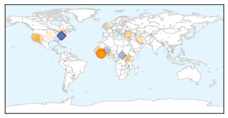
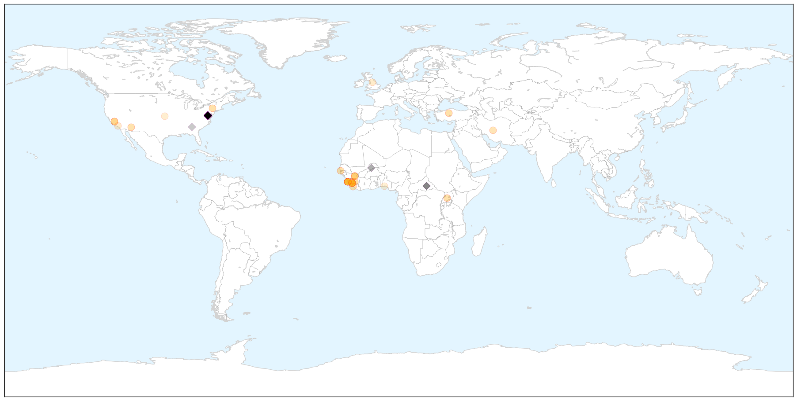
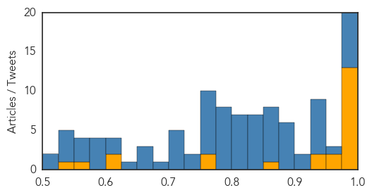
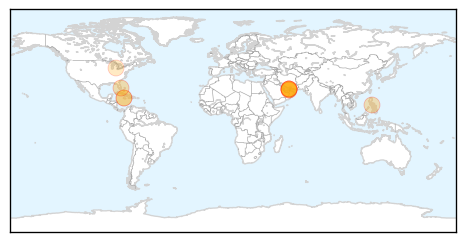
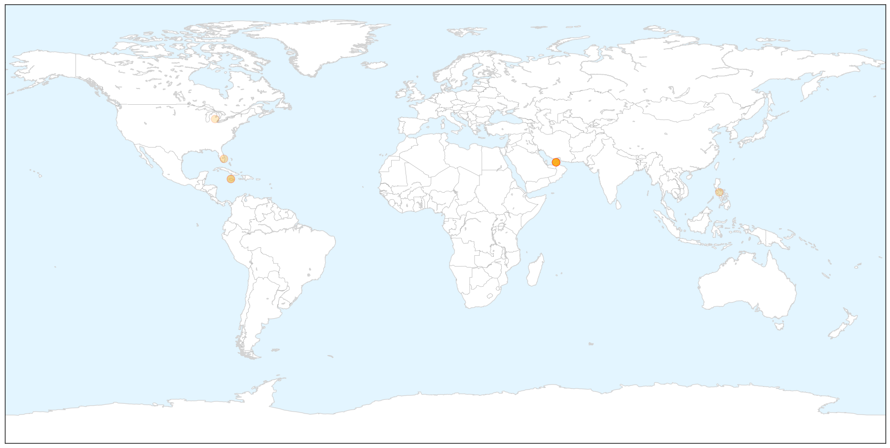
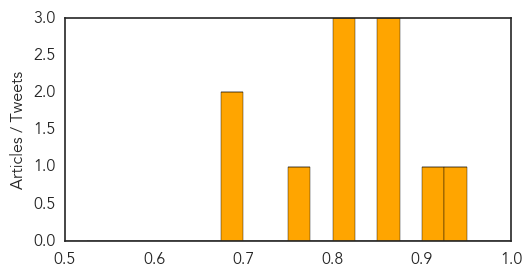

Ebola
30-Day Web Trend
4 alerts, 0 warnings

30-Day Twitter Trend
21 alerts, 0 warnings

Article Locations

X

Article Confidences
Top Articles:
- 0.999
- How traditional healers helped defeat Ebola
- 0.999
- Sierra Leone emerges from Ebola nightmare
- 0.999
- Sierra Leone emerges from Ebola nightmare
- 0.999
- Newborn's Ebola infection adds to Guinea's total
- 0.999
- Sierra Leone emerges from Ebola nightmare, AsiaOne World News
- 0.998
- Sierra Leone emerges from Ebola nightmare
- 0.998
- Another Ebola Patient Arrives In America for Treatment
- 0.998
- Sierra Leone emerges from Ebola nightmare
- 0.996
- 3 Ebola Travelers Fly Monthly from West Africa to Other Countries, Study Says
- 0.989
- VSGs in LRR sensitised on Ebola prevention
- 0.988
- Ebola's footprint on health system strengthening
- 0.987
- Doctor Who Survived Ebola Virus Speaks to UVA School of Medicine
- 0.978
- Tzu Chi Returns to Sierra Leone with Essential Medical Supplies and More - Sierra Leone
- 0.969
- Ebola doctor's dilemma: Two patients, and drugs enough for one
- 0.962
- Guinea Records Three New Cases Of Ebola, Brings Total To Nine
- 0.946
- Sierra Leone: Ebola, politics dominate press
- 0.939
- Liberians remember Ebola victims
- 0.862
- AU Commission Chairperson congratulates Africa-Against-Ebola Campaign for 2015 Global Leadership Award
- 0.774
- Ebola survivor beats the odds twice and gives birth to miracle baby
- 0.763
- First Consultants celebrates Ada Igonoh’s post-Ebola miracle baby
- 0.616
- Sierra Leone beds in against Ebola repeat with UK military’s 'hospital in a box'
- 0.610
- Why Ebola survivor was delivered of baby in U.S., by First Consultant’s CMD
- 0.557
- Ag industry 'woefully underprepared' for next big threat
- 0.531
- Ebola Survivor, Ada Igonoh Welcomes Baby Girl
Top Tweets:
- 0.984
- EBOLA GET INJECTED WITH LIVE EBOLA VIRUS Research lab demands people injected with Ebola https://t.co/Yn2lIma99d
- 0.984
- EBOLA GET INJECTED WITH LIVE EBOLA VIRUS Research lab demands people injected with Ebola https://t.co/Yn2lImrK0L
- 0.984
- EBOLA GET INJECTED WITH LIVE EBOLA VIRUS Research lab demands people injected with Ebola https://t.co/Yn2lIma99d
- 0.984
- EBOLA GET INJECTED WITH LIVE EBOLA VIRUS Research lab demands people injected with Ebola https://t.co/Yn2lIma99d …
- 0.984
- EBOLA GET INJECTED WITH LIVE EBOLA VIRUS Research lab demands people injected with Ebola https://t.co/Yn2lIma99d
- 0.984
- EBOLA GET INJECTED WITH LIVE EBOLA VIRUS Research lab demands people injected with Ebola https://t.co/Yn2lIma99d …
- 0.976
- Ebola virus outbreak in West Africa: lessons learnt and the way forward - https://t.co/MLPkqgHRd1 ebola
- 0.953
- well you can now get the Ebola Virus Vaccine at U.S. Hospitals we have that story
- 0.940
- RT: SierraLeone Ebola centre says reports of a new case of the virus are "unfounded" country on course to be declared Ebola…
- 0.936
- Sierra Leone emerges from Ebola nightmare - https://t.co/tQXT8nRoSz ebola
- 0.936
- Sierra Leone emerges from Ebola nightmare - https://t.co/iDBVqjgMxc ebola
- 0.936
- Sierra Leone emerges from Ebola nightmare - https://t.co/dH66etcoJL ebola
- 0.936
- Sierra Leone emerges from Ebola nightmare - https://t.co/Ooo2CgvHU6 ebola
- 0.936
- Sierra Leone emerges from Ebola nightmare - https://t.co/5uV1tjBwQG ebola
- 0.933
- Sierra Leone: Ebola politics dominate press - https://t.co/qFLSmFuYgx ebola
- 0.918
- Manamba Kante gagnant du concours Africa Stop Ebola en juillet dernier chante "Stop Ebola" https://t.co/qq5eygrtny
- 0.901
- RT: "chipotle causes ebola" @_ilana_bonell
- 0.894
- Samuel Eto'o: African football legend on Ebola fact finding mission in Ghana Sierra Leone - https://t.co/XPAQzv5tyN ebola
- 0.890
- Ebola's footprint on health system strengthening - https://t.co/oOyfhqI84X ebola
- 0.889
- Sierra Leone News:NERC CEO says Ebola does not go away with - https://t.co/1Fh7WGO1vu ebola
- 0.887
- RT: @phillips_jesss I almost died but I'm resilient much like the deadly ebola virus.......come to chipotle friends.
- 0.887
- Doctor Who Survived Ebola Virus Speaks to UVA School of Medicine - https://t.co/XDwIZa36Ak ebola
- 0.883
- MSF Ebola update November 2 - https://t.co/I0T68Sg9v2 ebola
- 0.872
- Doctor Who Survived Ebola Virus Speaks to UVA School of Medicine - NBC 29 News https://t.co/svpeXAli1n ebola EVD
- 0.871
- RT: Wow I can't believe chipotle has ebola now smh
- 0.868
- Ebola vine - https://t.co/zNOS4V4GBo ebola
- 0.868
- Ebola dispencer - https://t.co/G4il8IOaoR ebola
- 0.866
- Sierra Leone beds in against Ebola repeat with UK military's 'hospital in a box' - https://t.co/is4Mjgkcab ebola
- 0.860
- Ebola Exposed - https://t.co/7jpEOyARx9 ebola
- 0.859
- Ebola under the Microscope - Khmer Times https://t.co/SRuorjAt0j ebola EVD
- 0.849
- Sierra Leone to be Declared Ebola Free o Saturday - https://t.co/x8AoKjyGKZ ebola
- 0.845
- RT: Don't go to Chipotle there's an Ebola out break.... Ebola beans!! üòÇüòÇ lol seriously there an Ecoli break out.
- 0.843
- EBOLA KILLS CHILD TODAY EBOLA CONFIRMED DEATH MEDIA NOT REPORTING RETWEET EVERYONE! https://t.co/lBcSz0wcGP
- 0.843
- EBOLA KILLS CHILD TODAY EBOLA CONFIRMED DEATH MEDIA NOT REPORTING RETWEET EVERYONE! https://t.co/lBcSz0wcGP
- 0.842
- WHO reports new case of Ebola - https://t.co/Z5R49imDYD ebola
- 0.839
- Millennium Challenge Compact to Help Liberia Recover From Ebola - https://t.co/3EjmewjvRG ebola
- 0.830
- Ebola countdown: S/Leone gear up for Friday vigil marches - https://t.co/fiJwuFv41R ebola
- 0.824
- does mark have ebola news?
- 0.820
- WHO: Ebola Eradication Still A “Real Challenge” - https://t.co/0Lnz47430I ebola
- 0.815
- Newborn's Ebola infection adds to Guinea's total - CIDRAP https://t.co/lttkn4KPZx ebola EVD
- 0.811
- not at all a child died today from Ebola in Liberia!
- 0.809
- EBOLA KILLS CHILD TODAY EBOLA DEATH MEDIA NOT REPORTING https://t.co/lBcSz0wcGP
- 0.806
- Read more… - https://t.co/xuxrWk4uO7 ebola
- 0.800
- Ebola under the Microscope - https://t.co/yLeAunXI5e ebola
- 0.799
- VSGs in LRR sensitised on Ebola prevention - https://t.co/VrELVkgRdy ebola
- 0.799
- Interagency Collaboration on Ebola Situation Report No. 10 (04 November 2015) - https://t.co/JfpewRD3H6 ebola
- 0.798
- DRC study indicates importance of early hospitalization for Ebola cases - https://t.co/m0sXAL3xg3 ebola
- 0.797
- Millennium Challenge Compact to Help Liberia Recover From Ebola - Voice of America https://t.co/4vrfumlkU1 ebola EVD
- 0.795
- Newborn's Ebola infection adds to Guinea's total - https://t.co/MXV2mVlUkN ebola
- 0.795
- Newborn's Ebola infection adds to Guinea's total - https://t.co/KlhUX59x19 ebola
Showing top 50 tweets...
Meningitis
30-Day Web Trend
0 alerts, 0 warnings

30-Day Twitter Trend
5 alerts, 0 warnings

Article Locations

X

Article Confidences
Top Articles:
- 0.942
- Public health work kept meningitis tragedy from spreading
- 0.920
- School in Dubai denies child died due to meningitis
- 0.874
- Dubai Health Authority issues statement on meningitis
- 0.866
- Facing Alarming Rise in Tuberculosis, Santa Barbara County’s Control Efforts Shift to Latent Cases
- 0.857
- Dubai authorities rule out meningitis in death of school pupil
- 0.820
- Dubai is free from any cases of meningococcal meningitis, DHA says
- 0.815
- Bacteria scare at KPH
- 0.805
- JamaicaObserver.com
- 0.759
- Dubai has no case of meningitis, DHA says
- 0.698
- No confirmed meningitis cases in Dubai
- 0.690
- Elementary student diagnosed with viral meningitis
Top Tweets:
-
No tweets found for Nov 05, 2015